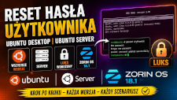
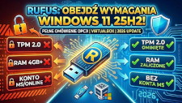
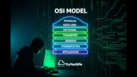
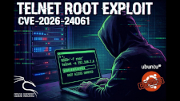
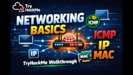
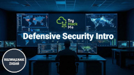
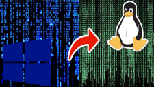

Jak zresetować hasło użytkownika w Ubuntu i Zorin OS 18.1 | Desktop, Server, LUKS - Poradnik 2026

W tym filmie pokazuję krok po kroku, jak odzyskać dostęp do systemu, gdy tradycyjne metody logowania zawiodą. Omówimy proces dla systemów Ubuntu (Desktop i Server),
najnowszego Zorin OS 18.1 oraz – co najważniejsze – pokażę, jak poradzić sobie w trudniejszej sytuacji, gdy Twój dysk jest w pełni zaszyfrowany przez LUKS.
Zapraszam do lektury...
ZAPOMNIAŁEŚ HASŁA? Windows 11 25h2 Reset w 2 MINUTY! (BEZ PROGRAMÓW - 2026)

𝗞𝗹𝗮𝘀𝘆𝗸𝗮 𝘇𝗴ł𝗼𝘀𝘇𝗲𝗻́ 𝗻𝗮 𝗛𝗲𝗹𝗽𝗱𝗲𝘀𝗸𝘂: "Zapomniałem hasła do Windowsa, a muszę dostać się do plików NA CITO!" 😅
Formatowanie dysku? Utrata danych? Nic z tych rzeczy.
W najnowszym materiale na moim kanale wziąłem na warsztat 𝗪𝗶𝗻𝗱𝗼𝘄𝘀 𝟭𝟭 (𝘄𝗲𝗿𝘀𝗷𝗮 𝟮𝟱𝗵𝟮) i sprawdziłem, jak w 2026 roku mają się klasyczne metody odzyskiwania dostępu.
Okazuje się, że legendarny trik z podmianą 𝘀𝗲𝘁𝗵𝗰.𝗲𝘅𝗲 (Klawisze trwałe) i 𝘂𝘁𝗶𝗹𝗺𝗮𝗻.𝗲𝘅𝗲 (Ułatwienia dostępu) na Wiersz Polecenia przed ekranem logowania ma się świetnie.
Zapraszam do lektury...
Rufus: Jak OMINĄĆ wymagania Windows 11 25H2! (TPM, RAM, Konto MS) | Poradnik 2026

Czy Twój sprzęt nagle stał się „za stary” dla Windows 11? 💻⚙️
Wersja Windows 11 25H2 wprowadza kolejne zmiany, ale jedno pozostaje niezmienne – walka o kontrolę nad własnym sprzętem. Jeśli irytuje Cię wymóg posiadania układu TPM 2.0,
ograniczenia RAM czy przymus logowania się kontem Microsoft, mam dla Ciebie rozwiązanie.
Zapraszam do lektury...
WINDOWS 11 25H2: INSTALACJA BEZ KONTA MICROSOFT! | SPRAWDZONA METODA | 2026

Microsoft coraz częściej wymaga zalogowania kontem Microsoft już podczas instalacji Windows. W tym odcinku pokazuję 5 różnych, praktycznych metod, które pozwalają
zakończyć instalację bez natychmiastowego logowania do konta online — wszystkie demonstracje wykonane są na sprzęcie testowym.
Zapraszam do lektury...
TryHackMe — OSI Model | Kompletny walkthrough krok po kroku

W tym filmie przechodzimy pokój *OSI Model* na platformie TryHackMe krok po kroku. Wyjaśniam wszystkie 7 warstw modelu ISO/OSI w praktyczny sposób oraz pokazuję, jak poprawnie odpowiadać na pytania w labie.
Zapraszam do lektury...
Wystarczy JEDNA komenda! 🔓 Root na Ubuntu przez Telnet (CVE-2026-24061)

Czy usługa Telnet w 2026 roku jest nadal bezpieczna? Spoiler: Absolutnie nie. 🛡️💻
W dzisiejszym materiale bierzemy na warsztat świeżą podatność CVE-2026-24061. Zobaczysz krok po kroku, jak przy użyciu Kali Linux 2025.02 można przeprowadzić skuteczny
atak na Ubuntu Server 24.04 i uzyskać pełne uprawnienia roota za pomocą jednej sprytnej modyfikacji zmiennej środowiskowej.
Zapraszam do lektury...
Sieci LAN bez tajemnic! 🔍 Rozwiązujemy TryHackMe: Intro to LAN #5

Jak tak naprawdę działają sieci lokalne (LAN)? 🤔 Jaka jest różnica między switchem a routerem i dlaczego topologia sieci ma znaczenie? Zapraszam na pełny walkthrough pokoju
"Intro to LAN" z TryHackMe! 🚀 W tym materiale nie ograniczam się tylko do zdobycia flag. Dokładnie analizujemy teoretyczne aspekty budowy sieci, które są kluczowe dla
każdego admina i specjalisty cybersecurity. Przejdziemy przez rodzaje topologii, działanie protokołów ARP i DHCP oraz rolę urządzeń sieciowych.
Zapraszam do lektury...
TryHackMe Walkthrough: What is Networking? (IP, MAC, ICMP) | Podstawy Sieci Komputerowych #4

W dzisiejszym odcinku bierzemy na warsztat absolutne podstawy sieci komputerowych na platformie TryHackMe! 💻 Jeśli zastanawiałeś się kiedyś, jak to się dzieje, że dane
trafiają z jednego końca świata na drugi, lub czym właściwie różni się adres IP od adresu MAC – ten film jest dla Ciebie.
Przejdziemy wspólnie przez pokój "What is Networking?", omawiając kluczowe zagadnienia, które musi znać każdy adept cyberbezpieczeństwa.
Zapraszam do lektury...
Jak zacząć pracę w Cyberbezpieczeństwie? 🚀 TryHackMe: Careers in Cyber (Walkthrough PL)
Cześć! 👋 W dzisiejszym odcinku wspólnie przejdziemy przez pokój "Careers in Cyber" na platformie TryHackMe. Jest to idealny materiał dla wszystkich,
którzy stawiają swoje pierwsze kroki w świecie IT Security lub zastanawiają się, którą ścieżkę kariery wybrać.
Zapraszam do lektury...
TryHackMe: Defensive Security Intro Walkthrough – Wstęp do Blue Team (PL)

W dzisiejszym odcinku kontynuujemy przygodę z platformą TryHackMe i ścieżką "Pre-Security". Tym razem bierzemy na warsztat pokój **Defensive Security Intro**, czyli
wprowadzenie do defensywnego bezpieczeństwa. 🛡️
Zapraszam do lektury...
TryHackMe – Offensive Security Intro (Walkthrough) PL.

W tym filmie przeprowadzam pełne omówienie pokoju Offensive Security Intro z platformy TryHackMe. Materiał jest przeznaczony dla osób, które chcą rozpocząć swoją przygodę
z cyberbezpieczeństwem, zrozumieć podstawy ofensywnego security oraz nauczyć się myślenia jak pentester.
Zapraszam do lektury...
"Cold Boot Atack" w praktyce: Odzyskanie Klucza FVEK (ang. Full Volume Encryprion Key) i odszyfrowanie dysku chronionego Bitlockerem krok po kroku.
W dobie coraz bardziej zaawansowanych technologii i rozwiązań zabezpieczających, cyberprzestępcy nieustannie szukają nowych sposobów na przełamanie barier ochronnych. Jednym z mniej
znanych, lecz niezwykle skutecznych ataków, jest cold boot attack. To jedena z najbardziej zaawansowanych metod ataków fizycznych, wykorzystywana do przechwytywania danych przechowywanych
w pamięci operacyjnej komputera. Jest szczególnie skuteczna w sytuacjach, gdy napastnik chce uzyskać dostęp do zaszyfrowanych danych, takich jak te chronione przez BitLocker, VeraCrypt
czy inne mechanizmy szyfrowania pełnodyskowego (FDE ang. Full Disc Encryprion). Metoda ta wykorzystuje właściwości fizyczne pamięci RAM. Ten rodzaj ataku bazuje na zdolności pamięci
operacyjnej do przechowywania danych przez krótki czas po wyłączeniu komputera, co umożliwia przechwycenie poufnych informacji, takich jak klucze szyfrujące czy hasła.
W artykule szczegółowo omówimy, jak działa ten atak, dlaczego jest możliwy, oraz jak przeprowadzić go krok po kroku, bazując na rzeczywistych technologiach.
Zapraszam do lektury...
Udostępnianie plików poprzez sieć LAN z systemu Windows 10 na Ubuntu 20.04

Często w artykułach oraz wideo tutorialach na YouTube opisywane są metody udostępniania plików z systemu z rodziny Linux na systemy Windows 7-10. Natomiat kwestia udostępniania plików z systemu Windows na Linux-a traktowany jest troszeczkę po macoszemu. A jak już coś się znajdzie to wprowadzane są daleko idące komplikacje które początkującego użytkownika mogą wprowadzić w zakłopotanie i przeświadczenie iż tylko eksperci mogą poradzić sobie z tym zadaniem. Zaczynając od instalacji dodatkowych funkcji w systemie Windows po instalację pakietów w systemie Linux, wykonywanie skomplikowanych (dla niewtajemnichonych) poleceń w terminalu, każdorazowe mapowanie dysku po restarcie czy też dodawanie zadań do CRON-a. Ja w tym artykule zaprezentuję w jaki sposób udostępnić pliki na przykładzie systemu Windows 10 i Ubuntu 20.04 bez instalacji dodatkowych pakietów oraz dodatkowej konfiguracji. Zmapujemy dysk i skonfigurujemy go w taki sposób aby nie system Ubuntu zapamiętał hasło. Nie twierdzę iż jest to sposób najlepszy, ale mogę zaryzykować stwierdzenie że jest jednym z najprostszych. Zapraszam do lektury.
Jak sprawdzić kto jest operatorem poczty?
Czasami dochodzi do sytuacji w której musimy skonfigurować klienta poczty np. Outlook-a czy Thunderbird-a, u klienta którego nie znamy i nie mamy nikogo, kogo moglibyśmy podpytać na jakim serwerze przechowywana jest poczta i oczywiście nie mamy dostępu do komputera o analogicznej konfiguracji. Jedyną informacją jaką dysponujemy to nazwa domeny SMTP (ang. Simple Mail Transfer Protocol). Dysponując rekordem MX dla domeny SMTP jesteśmy w stanie ustalić:
- Nazwę, numer portu, rodzaj szyfrowania serwera poczy przychodzącej (IMAP/POP3);
- Nazwę, numer portu, rodzaj szyfrowania serwera poczy wychodzącej (SMTP);
Sprawdzenie dostawcy poczty jest stosunkowo proste i składa się z paru poleceń w konsoli z wykorzystaniem wbudowanego narzędzia nslookup. Polecenie nslookup jest natywnie dostępne w systemie Windows jak i Linux. Umożliwia wysłanie do dowolnego wskazanego serwera DNS (ang. Domain Name System), prośby o zwrócenie wskazanego typu rekordu dla wskazanej nazwy DNS. Dzięki temu narzędziu uzyskamy informacje takie jak rekordy DNS, adres IP, nazwę domeny. Zapraszam do lektury....